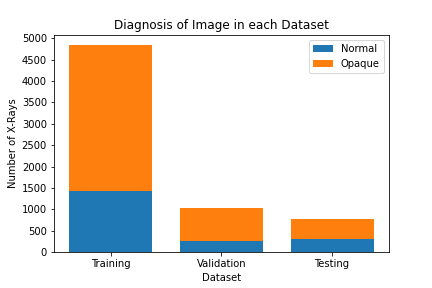

Here Be Stats!
Sample images from dataset:

The above sixteen images are a small sample of chest x-rays in both children and adults, with results showing normal or opaque. It should be noted as well that these images above are the result of having been uniformly resized to be used in analysis.
Dataset split between normal and opaque:
Quick visualization of the number of datapoints we used to train, validate, and test our model. There are two classifications here, normal (which is healthy) and opaque (meaning there is some sort of issue). Since we are building a tool geared towards medical purposes, the majority of our data is opaque. The logic for this is to catch as many and all features which could result in a True Positive for an individual having sort of affliction of the lung. We would much rather provide a result which is a false positive, than a false negative.
Flow chart of convolutional neural network utilized:

****Will need's Tom's assistance to write something about the model itself The model itself is comprised of three seperate convolution layers which takes into account x parameters. This is then coupled with three seperate node layers which takes into account y parameters. Once compiled, we are looking at a total of 29,590,722 trainable parameters.